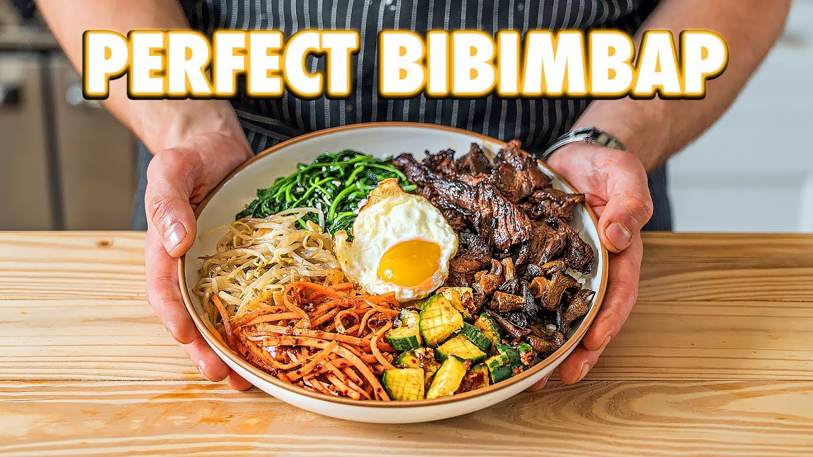

Home
Joshua Weissman's Authentic Bibimbap

Authentic Bibimbap, courtesy of Joshua Weissman. I have tried this one myself at
home and it was awesome.
Bibim Gochujang Sauce
- 2.5 tablespoons mirin
- 3 tablespoons rice vinegar
- 1 tablespoon honey
- 2 teaspoons dark soy sauce
- 2 cloves garlic, grated
- 2 teaspoons grated ginger
- 2 teaspoons toasted sesame oil
Meat Method
- Pat the meat dry and cut into ¼-inch slices and toss into a bowl. To the bowl, add chopped garlic, sweet
soy
sauce, dark soy sauce, rice vinegar, sesame oil, and honey. Mix together by hand until thoroughly
combined.
-
Cover and refrigerate for at least 20 minutes.
- Once the grill is screaming hot, grill the meat in batches for 30 seconds to 1 minute on both sides.